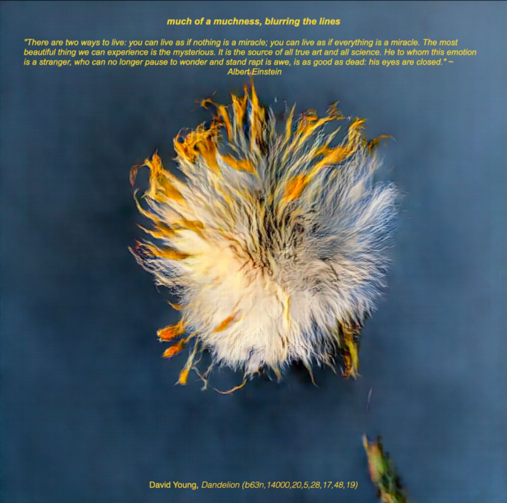

Exhibition
ICCC 2021
ICCC 2021 Art Exhibition
An international online exhibition bringing together artists whose work engages artificial intelligence, generative systems, robotics, and computational approaches to creativity.
Image: Dandelion, from the ICCC 2021 exhibition.